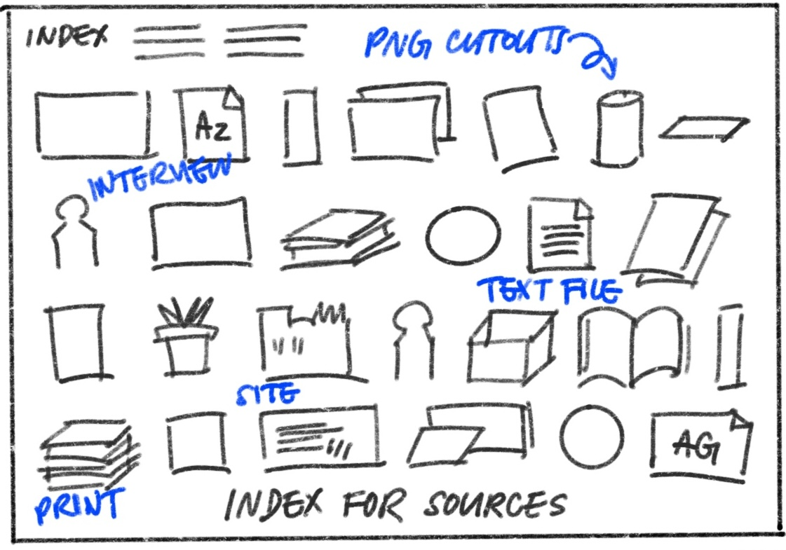
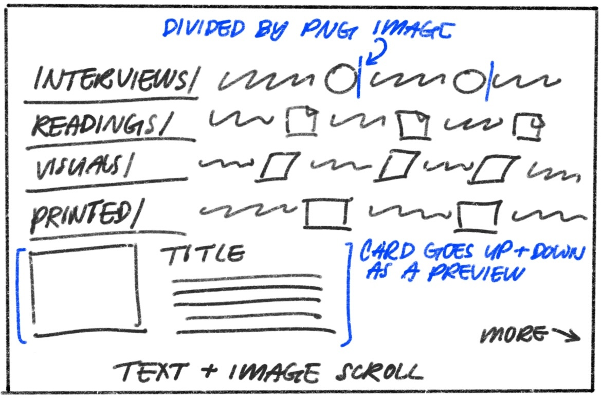
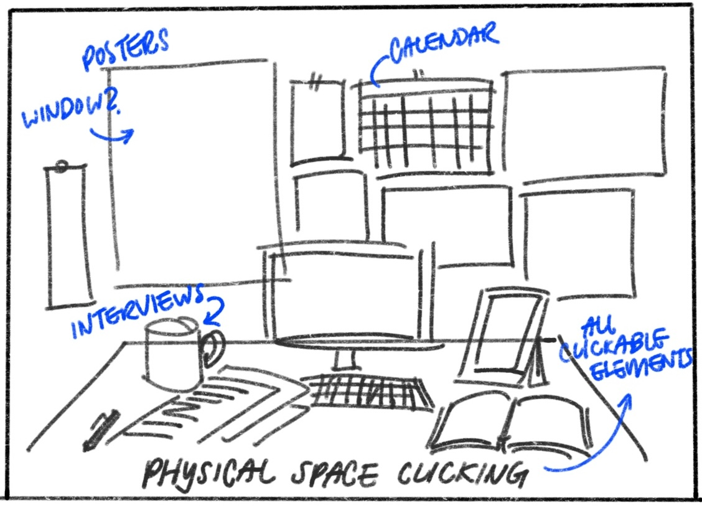
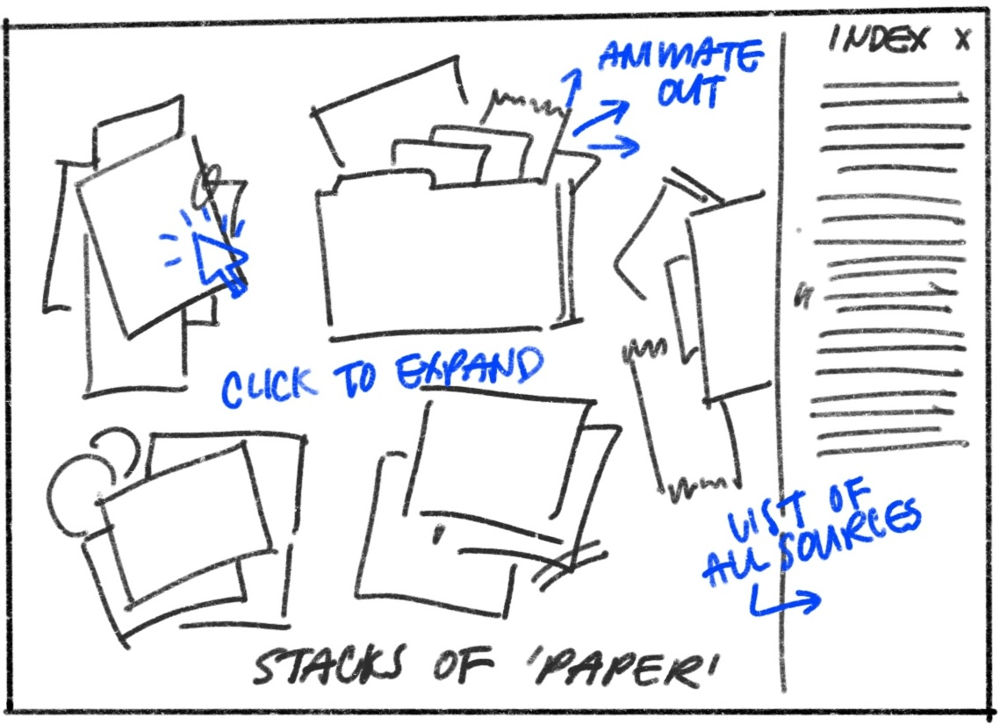
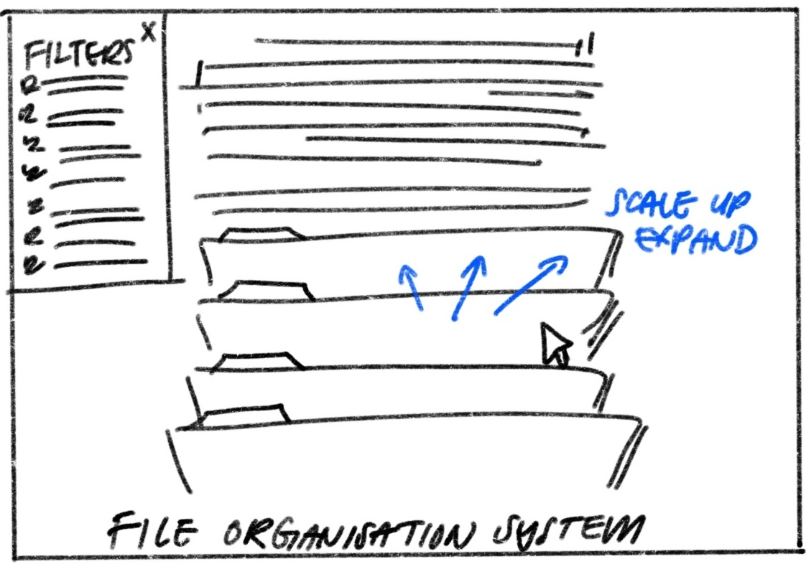
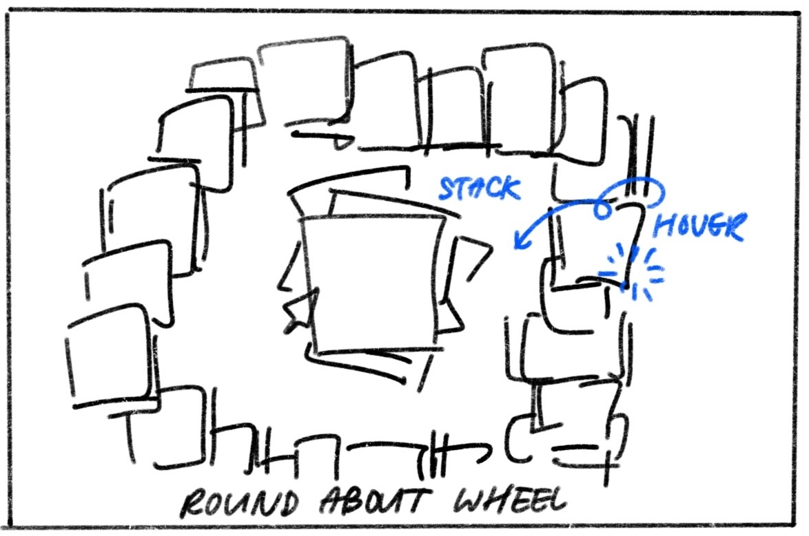
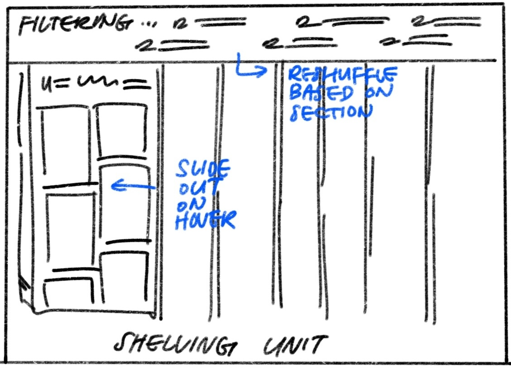
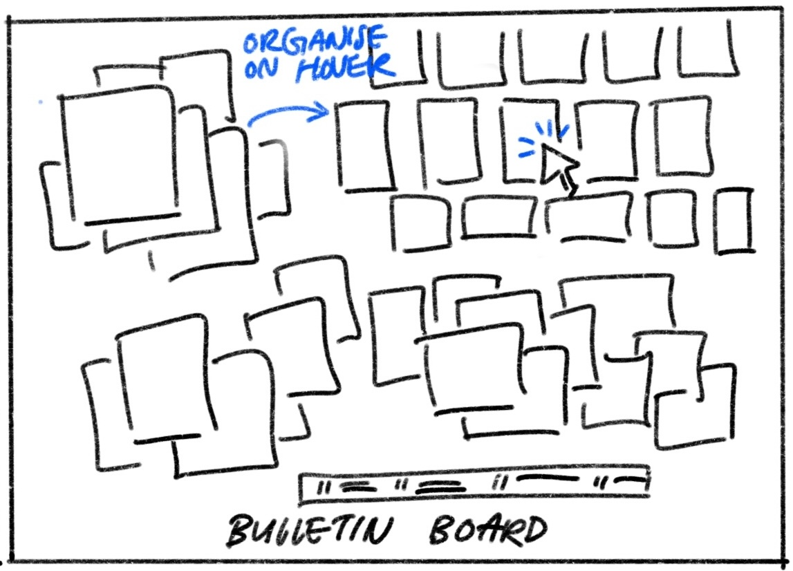

Open Studio Thesis Documentation by Hyning Gan
Welcome to Open Studio Notebook. This site is an open-source notebook for my Parsons CD thesis process, documenting research, references, and experiments in real time. By sharing the process of developing this year long project, I'm exploring design as a shared commons —– and invite others to learn, question, and research alongside me.
Have thoughts or questions? I want to talk to you, send me a message HERE!
Hyning is currently:
preparing for thesis exchange 3 presentation
- FEB 12, 2026: preparing for thesis exchange 3 presentation
- FEB 6, 2026: making a journal page for this process site
- JAN 30, 2026: doing a weekly writing practice + reading Teaching to Transgress
- JAN 23, 2026: updating this site and acclimating to her new thesis class
- JAN 17, 2026: freaking out about thesis process and trying to fix that
- JAN 10, 2026: reading What It Means to Be a Designer Today by AIGA Eye on Design
- DEC 26, 2025: figuring out my thesis class section change (this was stressful)
- DEC 17-21, 2025: is on winter break! enjoying the snowy mountains of vermont
- DEC 12, 2025: presenting her end of semester progress w guest crit by Rebecca Wilkinson
- DEC 10, 2025: designing and printing book cover prototypes
- DEC 5, 2025: working on visual directions for her physical book cover prototype
- NOV 21, 2025: interviewing more interviews + synthesising responses via plaud
- NOV 19, 2025: developing a system for documenting interview responses for this site
- NOV 17, 2025: conducting first interviews + applying for grant funding
- NOV 14, 2025: preparing open call on socials + sharing this site publically
- NOV 4, 2025: working on getting my process site live for thesis exchange
- NOV 3, 2025: updating research library and preparing to publish
- OCT 31, 2025: reading Design Harder by Erik Carter & ideating prototypes
- OCT 23, 2025: coming up with a comprehensive timeline and research plan
- OCT 17, 2025: exploring multi-form projects and distribution methods
- OCT 10, 2025: presenting initial research and direction
- SEP 26, 2025: solidifying thesis statement + concept direction
- SEP 19, 2025: presenting her 256 project critique
- SEP 18, 2025: grinding 256 project for crit
- SEP 13, 2025: starting 256 project
Last Updated: Thursday, February 12, 2026
Wednesday, February 11, 2026
Elizabeth Goodspeed Afterhours @ Pentagram
Friday, February 6, 2026
Cataloging My Writing
Friday, January 30, 2026
A Writing Practice
Friday, January 23, 2026
First Thesis Class Back
Monday, November 17, 2025
Interview Sample: James Tupling (graphic designer/startup space)

Friday, November 14, 2025
Publishing This Site Publically
- Open Studio investigates how design education can evolve to meet a global and culturally diverse future. Through interviews, fieldwork, and participatory research, the project culminates in a publication, interactive website, and public event that explore how designers learn today and how future systems of design learning might better serve an interconnected world.
Friday, November 7, 2025
Thesis Exchange 2
- Main takeaway: need to ground further on what about design education I am trying to investigate


Tuesday, November 4, 2025
Reading + Researching + Prototyping
Friday, October 31, 2025
Design Matrix Group Exercise


Monday, October 27, 2025
Design Harder Book Launch @ Index Space


Friday, October 24, 2025
1 on 1 Feedback w Lydia
Thursday, October 23, 2025
Documenting Research
BODY OF WORK




Friday, October 17, 2025
Thinking About Forms
CONTENT FORMS
- Common Dimensions by Rebecca Wilkinson
THESIS EXCHANGE: Friday, October 10, 2025
Thesis Exchange 1


Friday, September 26, 2025
Revising 256
Friday, September 19, 2025
256 Project Critique
Saturday, September 13, 2025
Sketches for a spatial presentation of my image archive



